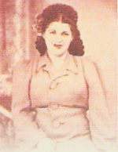

Golda (Gertrude Yarra) was born in East New York, Brooklyn, 1913. Her mother, Esther, was born in Romania. Her father, David, was born in Vienna. Golda grew up in extreme poverty. She was blinded in an accident as a young child and remained blind for three years. Although there was no money for the surgery that could correct her blindness, Golda's mother begged a famous German surgeon to operate on her daughter at no cost and he agreed. Golda was able to see again.
Golda quit school at age 14, so that she could work to save money for her younger brother Fred's education. Fred went on to become a school teacher in the New York City school system for thirty years. He also wrote a book on square dancing and was a fencing teacher and hypnotist. Golda started working in factories to help her family as well as to save money for Fred. She was appalled at the working conditions for the factory workers. At the factory she worked with people of all races and nationalities. In evenings and on weekends Golda sang at the local social clubs.
After marrying her husband Murray and having two
children, she continued to work in the factory. She
started organizing the labor movement to improve the
working conditions of the workers. Even though the
bosses threatened her, Golda continued organizing. She
organized a strike, and although she was fired, the
other workers were given better conditions.
Golda continued to work for organized labor in every factory that she worked at. Her home was a haven in the neighborhood. People in trouble could always come to her railroad flat on the Lower East Side of Manhattan for a meal or for a talk. All the neighbors' children were always at her home.
On more than one occasion, she brought in homeless men from the Bowery and helped dry them out and find them work. When her husband, Murray, would object, she would say, "But, Murray, they had mothers who loved them too." Murray just thought that she was crazy, but acceded to her actions. Nobody ever left her home hungry. When her friends or her children's friends were ever in trouble, they were always offered a meal and a place to stay if necessary.
Although Golda had little in the way of finances, she had a huge heart and always would help those in need. Prejudice was never allowed in her home, and anybody exhibiting any type of prejudice or racism was quickly shown the door. After Golda turned fifty, she started working for the State of New York. Compared to the factory work, it was heaven. She couldn't understand when any of the other workers would complain.
Golda lived by the Golden Rule and by the maxim that it was better to give than to receive.
She passed away in 1989, but left her legacy of love and giving behind.